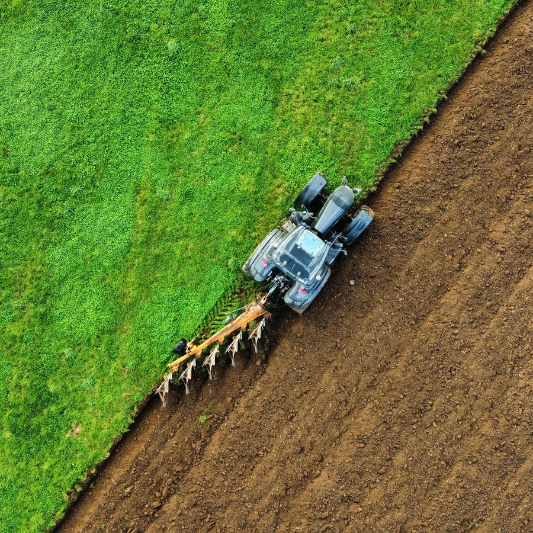

Eje 01 · PrincipalRescate territorial y preparación del suelo
Rehabilitación mecánica de suelos degradados, descompactación y acondicionamiento mediante maquinaria ligera para reactivar la capacidad de retención de agua y biodiversidad nativa.